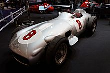
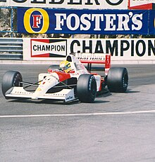
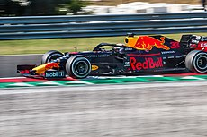

Las carreras de Gran Premio tienen sus raíces en las carreras automovilísticas surgidas en Francia en 1894. En un principio se trataba de eventos individuales, sin conexión y en caminos de tierra, prácticamente sin ninguna limitación. De 1927 a 1934, el número de carreras consideradas Gran Premio creció hasta alcanzar dieciocho en 1934, el máximo antes de la Segunda Guerra Mundial.
Creacion del campeonato
En 1945, inmediatamente después de la Segunda Guerra Mundial, sólo hubo cuatro carreras. Antes de la Segunda Guerra Mundial se habían establecido las reglas para las competiciones de Grand Prix, que debían obedecer tanto autos como pilotos.
Estas reglas, conocidas en su conjunto como Fórmula, no se concretaron hasta que en 1947 la antigua AIACR se reorganizó, pasándose a llamar la Federación Internacional del Automóvil, conocida por las siglas "FIA". Con sede central en París, al final de la temporada de 1949 anunció que para 1950 unirían varios Grandes Premios nacionales para crear un Campeonato Mundial de Pilotos, por lo que en 1950 se celebró el primer campeonato de Fórmula 1.
Por motivos económicos, en los años de 1952 y 1953 todavía se compitió con coches de Fórmula 2 y el calendario continuó incluyendo varias carreras que no eran consideradas Grandes Premios hasta 1983. Se estableció un sistema de puntuación y se reconocieron un total de siete carreras como aptas para el Campeonato del Mundo.
Inicio de la Formula 1
El primer Gran Premio se realizó el 13 de mayo de 1950 en el circuito de Silverstone y fue ganado por el italiano Giuseppe Farina, consiguiendo además el campeonato de 1950 tras vencer a su compañero de equipo, el argentino Juan Manuel Fangio (ambos en la escudería Alfa Romeo).

Mercedes Benz W 196 de Juan Manuel Fangio.
Sin embargo, Fangio ganó el título en 1951, 1954, 1955, 1956 y 1957. Su racha fue interrumpida debido al bicampeonato del piloto de Ferrari Alberto Ascari. También en esta época se vieron pasar pilotos como el británico Stirling Moss que aunque pudo competir con regularidad, nunca fue capaz de ganar el Campeonato Mundial, y por ese motivo los ingleses lo consideran «el conductor más grande que nunca ganó un título mundial».
El primer gran desarrollo tecnológico se produjo cuando la Cooper Car Company reintrodujo coches con motor central (después de los pioneros Auto Union de Ferdinand Porsche en los años 1930), que evolucionaron desde los diseños de la empresa en la Fórmula 3.
El australiano Jack Brabham, campeón del mundo en 1959, 1960 y 1966, pronto demostró la superioridad del nuevo diseño. En 1961, todos los competidores regulares habían cambiado a coches con motor central.
El primer británico campeón del mundo fue Mike Hawthorn, que condujo un Ferrari al título en 1958.
En 1962, Lotus presentó un coche con un chasis monocasco de aluminio en lugar del tradicional chasis tubular. Este resultó ser el mayor avance tecnológico desde la introducción de los coches con motor central. En 1968, Lotus incluyó el logotipo de Imperial Tobacco en sus automóviles, introduciendo el patrocinio de marcas de tabaco en este deporte.
A partir de la década de 1970, Bernie Ecclestone reorganizó la gestión de los derechos comerciales de la Fórmula 1. Ecclestone es ampliamente reconocido por la transformación del deporte en un negocio de miles de millones de dólares.
Cuando Ecclestone compró el equipo Brabham en 1971 se ganó un puesto en la Asociación de Constructores de Fórmula 1 (FOCA) y en 1978 se convirtió en su presidente. Antes los propietarios de los circuitos controlaban los ingresos de los equipos y negociaban con cada uno individualmente; sin embargo, Ecclestone convenció a los equipos de hacerlo en conjunto a través de FOCA
La formación de la Fédération Internationale du Sport Automobile (FISA) durante 1979 desató la polémica FISA-FOCA, durante la cual la FISA y su presidente Jean-Marie Balestre discutieron repetidamente con FOCA sobre los ingresos de televisión y las reglamentaciones técnicas. FOCA amenazó con establecer una serie rival, boicoteó un Gran Premio y FISA retiró la sanción de las carreras.
El resultado fue el Acuerdo de la Concordia de 1981, que garantizaba la estabilidad técnica, ya que los equipos iban a recibir un aviso razonable de las nuevas normativas. Aunque FISA afirmó su derecho a los ingresos de televisión, entregó la administración de los derechos a la FOCA.
En 1987, la FOCA cedió la gestión de los derechos de televisión a la Formula One Promotions and Administration (FOPA), luego renombrada Formula One Management, bajo la dirección de Ecclestone.
El desarrollo de ayudas electrónicas a los pilotos comenzó durante la década de 1980. Lotus desarrolló un sistema de suspensión activa que apareció por primera vez durante el año 1982 en el Lotus 91.
En 1987, este sistema fue perfeccionado y conducido a la victoria por Ayrton Senna en el Gran Premio de Mónaco de ese año.

Senna gana el Gran Premio de Mónaco de 1991.
A principios de 1990 otros equipos siguieron su ejemplo y desarrollaron cajas de cambio semi-automáticas y control de tracción eran una progresión natural. La FIA, debido a las quejas de que la tecnología determinaba el resultado de las carreras más de la habilidad del piloto, prohibió muchas de estas ayudas para el año 1994.
Los equipos firmaron un segundo Acuerdo de la Concordia en 1992 y un tercero en 1997, que expiró el último día de 2007.
En la pista, McLaren y Williams dominaron los años 1980 y 1990; Brabham también fue competitivo durante la primera parte de la década de 1980, al ganar dos mundiales de pilotos con Nelson Piquet. Desarrollado por Porsche, Honda y Mercedes-Benz, en ese período McLaren ganó dieciséis campeonatos —siete de constructores y nueve de conductores—, mientras que Williams utilizó motores de Ford, Honda y Renault para ganar también dieciséis títulos —nueve de constructores y siete de pilotos—.
La rivalidad entre los pilotos Ayrton Senna y Alain Prost se convirtió en el foco central de la F1 en 1988, y continuó hasta que el francés se retiró a finales de 1993.
Senna murió en el Gran Premio de San Marino de 1994 después de chocar contra un muro en la salida de la curva de Tamburello, el mismo fin de semana en que Roland Ratzenberger perdió la vida en un accidente durante la clasificación del sábado.
Desde entonces, ningún piloto había muerto en la pista al volante de un coche de Fórmula 1 hasta 2015 con la muerte de Jules Bianchi accidentado en 2014 en Suzuka, si bien también tres comisarios de pista han perdido la vida: uno en el Gran Premio de Italia de 2000, el segundo en el Gran Premio de Australia 2001 y el tercero en el Gran Premio de Canadá de 2013.
Los pilotos de los equipos McLaren, Williams y Benetton Renault, y Ferrari, ganaron cada campeonato del mundo de 1984 a 2008 y los propios equipos ganaron cada campeonato de constructores entre 1979 y 2008
Debido a los avances tecnológicos de la década de 1990, el costo de competir en la Fórmula 1 ha aumentado dramáticamente. Este aumento de las cargas financieras, combinado con el predominio de los cuatro equipos —en gran parte financiados por grandes fabricantes de automóviles como Mercedes-Benz—, hizo que los equipos más pobres e independientes lucharan no solo para mantener la competitividad, sino para mantenerse en el negocio, y obligó a varios equipos a retirarse. Desde 1990, veintiocho equipos se han retirado de la Fórmula 1.
Michael Schumacher y Ferrari ganaron cinco campeonatos de pilotos (2000-2004) y seis de constructores (1999-2004) consecutivos, algo sin precedentes. Schumacher estableció muchos récords nuevos, incluidos los de victorias de Gran Premio (91), victorias en una temporada (trece de dieciocho), y más títulos de conductores (siete).
La racha de Schumacher terminó el 25 de septiembre de 2005, cuando el piloto de Renault Fernando Alonso se convirtió en el campeón más joven de la Fórmula 1 hasta ese momento. Durante el año 2006, Renault y Alonso volvieron a ganar ambos títulos. Schumacher se retiró a finales de 2006 después de dieciséis años en la Fórmula 1, pero salió de su retiro para la temporada 2010, corriendo para el recién formado equipo Mercedes, durante tres temporadas.
Desde 1983, la Fórmula 1 había sido dominado por equipos especializados en carreras, como Williams, McLaren y Benetton, usando motores suministrados por los grandes fabricantes de automóviles como Mercedes-Benz, Honda, Renault y Ford.
A partir de 2000, con la creación del equipo Jaguar, de poco éxito, los nuevos equipos de propiedad del fabricante entraron en la Fórmula 1 por primera vez desde la salida de Alfa Romeo y Renault a finales de 1985.
Para el año 2006, los equipos de fabricantes como Renault, BMW, Toyota, Honda y Ferrari dominaron el torneo, teniendo cinco de los seis primeros lugares en el campeonato de constructores. La única excepción fue McLaren, que en ese momento era parte-propiedad de Mercedes Benz.
A finales de los años 2000, como consecuencia de la crisis económica, se produjo la retirada de varias escuderías de la F1: Honda y Super Aguri a fines de 2008, y BMW y Toyota a fines de 2009.
Por su parte, Mercedes-Benz formó su propio equipo en 2010, inicialmente llamado Mercedes GP, a la vez que retiró paulatinamente su apoyo económico a McLaren.
En esta época Red Bull y Sebastian Vettel dominaron desde el 2010 hasta el 2013, ganando cuatro campeonatos de pilotos y equipos consecutivos
El empresario malayo Tony Fernandes intentó que otro histórico constructor, Team Lotus, regresara a la Fórmula 1 a partir de 2010. Para eso, inscribió a una escudería anglo-malaya bajo la denominación Lotus Racing, mientras que en su última temporada utilizó el nombre e imagen del mítico Team Lotus, tras adquirir durante 2010 los derechos de la marca Team Lotus y su patrimonio histórico.
El 27 de mayo de 2011, el Tribunal Superior dictaminó que el equipo podría seguir utilizando el nombre Lotus en la F1 y se confirmó a Fernandes como el propietario del nombre Team Lotus con el derecho a llamar a sus coches "Lotus" y usar el logotipo de la marca según los términos del acuerdo de 1985 entre Lotus Cars y Team Lotus.
Sin embargo, a partir de 2012 su plaza fue reemplazada por Caterham Cars bajo la denominación de Caterham F1 Team, para evitar posibles disputas legales con Lotus Cars (propietario de los coches Lotus), por el derecho al uso del nombre "Lotus" en Fórmula 1. Esta modificación permitió que, desde 2012 hasta 2015, Genii Capital, comprador de Renault, compitiera en Fórmula 1 como Lotus F1 Team, junto con el patrocinio de Lotus Cars. Caterham fue embargada y exonerada de correr las primeras fechas de 2015 en espera de conseguir un comprador.
En 2014, la Fórmula 1 llevó adelante un gran cambio reglamentario, remplazando los motores V8 por los V6 de 1.6 litros turboalimentados. Los monoplazas ahora cuentan con un sistema de propulsión híbrido, al añadir un sistema de recuperación de energía. A Mercedes, Ferrari y Renault se sumó Honda en 2015 como proveedora de motores de McLaren, siendo los únicos cuatro fabricantes de esta era.
Lewis Hamilton y Mercedes dominaron el comienzo de la era híbrida. Su compañero de equipo Nico Rosberg ganó en 2016, pero a partir de 2017 Hamilton ganó otros cuatro títulos consecutivos, igualando la cifra de Michael Shumacher de 7 títulos mundiales.
En 2021 se vivió una de las más álgidas batallas por el título entre Hamilton y Max Verstappen, duelo que se acabaría llevando el holandés.
El Formula One Group es controlado desde septiembre de 2016 por la empresa estadounidense Liberty Media, propiedad de John C. Malone. Bernie Ecclestone continuó como director ejecutivo de la empresa hasta el 23 de enero de 2017, tras 39 años al mando de los negocios de la Fórmula 1.

Max Verstappen en el GP de Hungría de 2019.
Después de la pandemia, que hizo retrasar el mayor cambio aerodinámico en la Fórmula 1 en 40 años de 2021 a 2022, por fin se produjo. Los coches adoptaron el llamado efecto suelo, y se simplificaron muchas partes del coche, como los alerones, para reducir las turbulencias que cada pieza produce, y por consecuencia, el aire sucio, que hace que el coche de atrás le cuesta más acercarse. Esto se ha hecho para mejorar el espectáculo, que los coches se puedan seguir más de cerca.
Quieres conocer más sobre la F1? Aqui tienes un video: